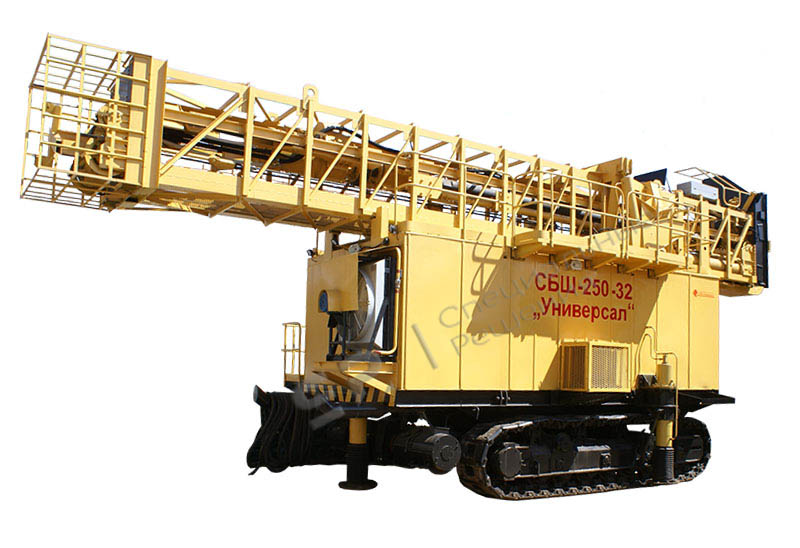
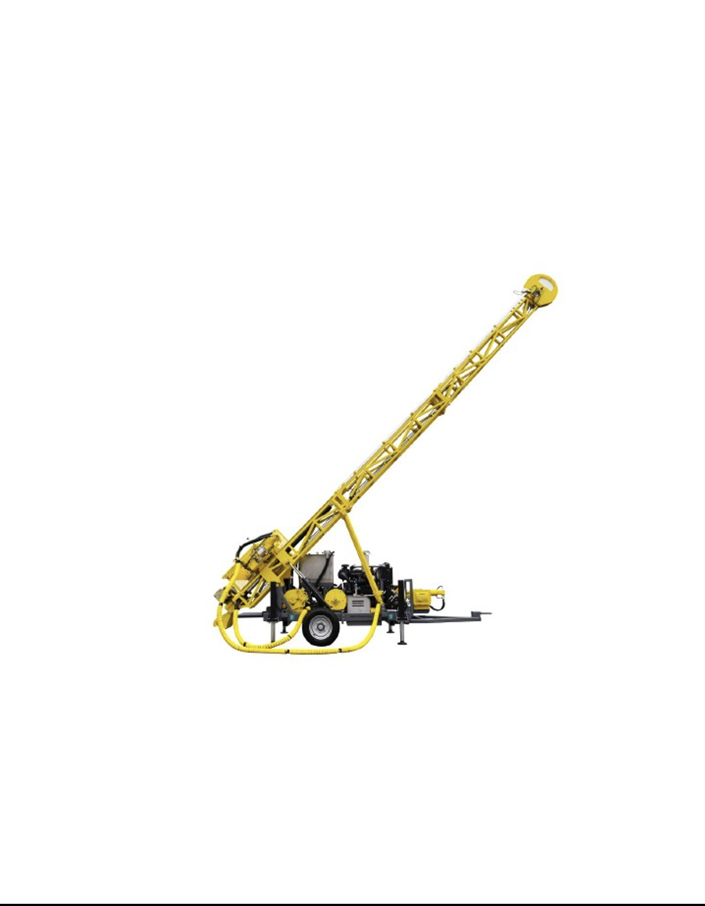
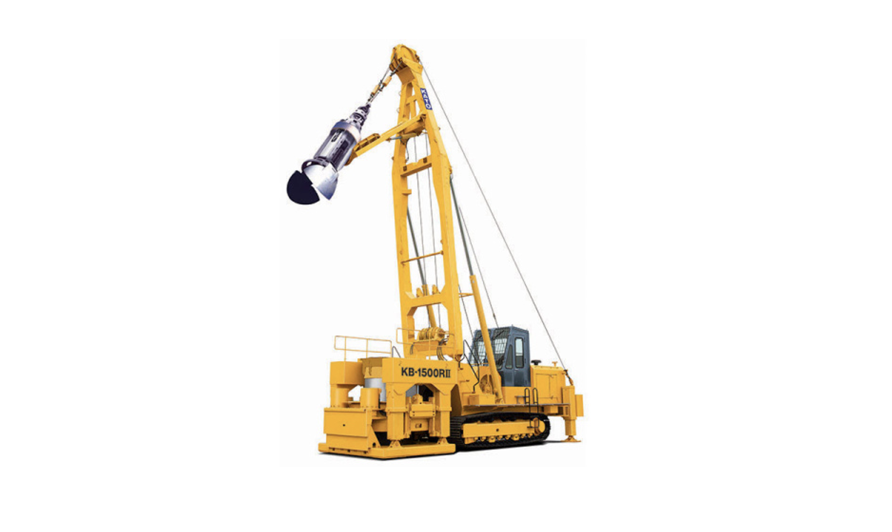

Применяются на открытых работах для бурения скважин диаметром 160–320 мм в породах любой крепости. Используют шарошечные долота с опорой качения.

Используются для геологоразведки и бурения взрывных скважин сложной конфигурации. Забой инструментом (коронкой) разрушается по кольцевому периметру.

Многофункциональные машины на пневмошинном ходу. Идеальны для подземных работ и карьеров с сложной топографией. Оснащены телескопическими мачтами.
Станок передаёт крутящий момент 55 кН·м. Колонка набирается из труб длиной 6 м. Внизу — шарошечное долото 250 мм.
Веер скважин глубиной 20 м. Колонка состоит из штанг 1.5 м. Забойный пневмоударник COP 66.
Для бурения шпуров в тоннелях. Колонка — 1-2 штанги с муфтовым соединением.
| Станок (тип) | Рекомендуемая колонка | Тип резьбы | Макс. крутящий момент |
|---|---|---|---|
| СБШ-250 | Труба 168х10 мм, замок З-64 | Трапецеидальная | 55 кН·м |
| DM45 (Epiroc) | Труба 114х8 мм / 140х10 мм | API Reg 3.5″ | 45 кН·м |
| Simba M7 | Шестигранник 32 мм / труба 76 мм | R38 / T45 | 12 кН·м |
| ПТ-36 (пневмоподдержка) | Штанга 22 мм | Коническая R25 | 0.8 кН·м (ручная подача) |